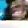
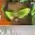

Change-point review — QAD vs TWIS · map 1 (nepal)
Every suspected hero change, confirmed or rejected, with evidence. Back to full report · hero crop report.
Confirmed swaps
swap a5 juno → lucio at 39:54 (2394s) · conf 0.817 · 3 obs
 lucio persisted 3 obs (2394s-2400s) while juno no longer detected
lucio persisted 3 obs (2394s-2400s) while juno no longer detected swap a5 juno → lucio at 42:55 (2575s) · conf 0.854 · 3 obs
 lucio persisted 3 obs (2575s-2577s) while juno no longer detected
lucio persisted 3 obs (2575s-2577s) while juno no longer detected Setup-phase comp changes
setup-change a4 kiriko → lucio at 30:25 (1825s) · conf 0.621 · 3 obs
lucio persisted 3 obs (1825s-1831s) while kiriko no longer detected [during setup phase — comp change, not an in-game swap]
setup-change a4 lucio → kiriko at 30:35 (1835s) · conf 0.907 · 2 obs
kiriko persisted 2 obs (1835s-1840s) while lucio no longer detected [during setup phase — comp change, not an in-game swap]
setup-change a5 lucio → juno at 30:15 (1815s) · conf 0.98 · 2 obs
 juno persisted 2 obs (1815s-1820s) while lucio no longer detected [during setup phase — comp change, not an in-game swap]
juno persisted 2 obs (1815s-1820s) while lucio no longer detected [during setup phase — comp change, not an in-game swap] setup-change a5 lucio → juno at 41:06 (2466s) · conf 0.973 · 2 obs
juno persisted 2 obs (2466s-2470s) while lucio no longer detected [during setup phase — comp change, not an in-game swap]
Rejected suspected swaps
rejected-swap a2 sym → sojourn at 43:25 (2605s) · 1 obs
candidate sojourn seen 1x then sym returned — noise, not a swap
rejected-swap a3 mauga → sojourn at 43:25 (2605s) · 1 obs

candidate sojourn seen 1x then mauga returned — noise, not a swap rejected-swap a4 kiriko → shion at 36:21 (2181s) · 1 obs
candidate shion seen 1x then kiriko returned — noise, not a swap
rejected-swap a4 kiriko → sojourn at 43:25 (2605s) · 1 obs
candidate sojourn seen 1x then kiriko returned — noise, not a swap
rejected-swap a5 lucio → sojourn at 43:25 (2605s) · 1 obs
candidate sojourn seen 1x then lucio returned — noise, not a swap
rejected-swap b2 sym → sojourn at 36:40 (2200s) · 2 obs
candidate sojourn seen 2x then sym returned — noise, not a swap
rejected-swap b4 lucio → sojourn at 38:50 (2330s) · 1 obs

candidate sojourn seen 1x then lucio returned — noise, not a swap rejected-swap b5 kiriko → juno at 30:11 (1811s) · 1 obs
 candidate juno seen 1x then kiriko returned — noise, not a swap
candidate juno seen 1x then kiriko returned — noise, not a swap Unestablished slots
none